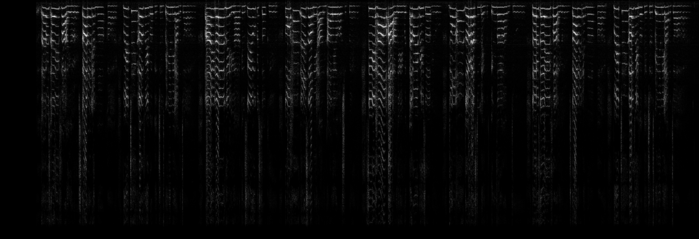
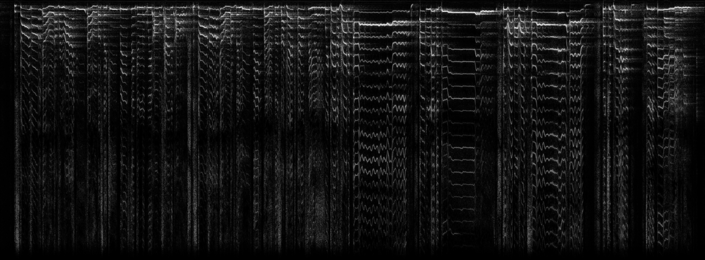
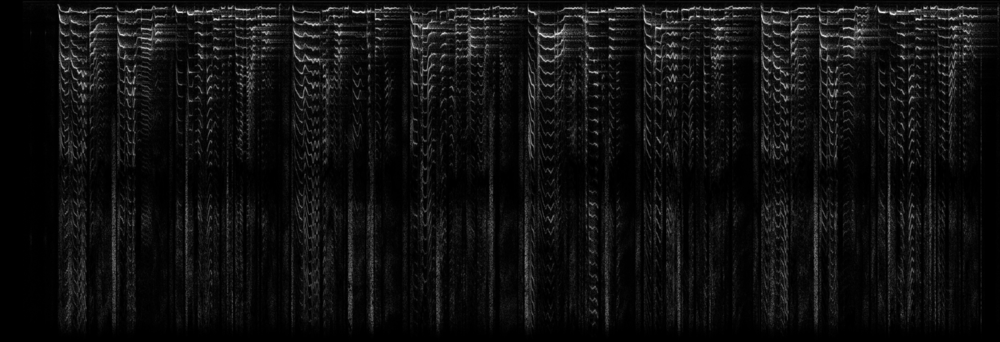
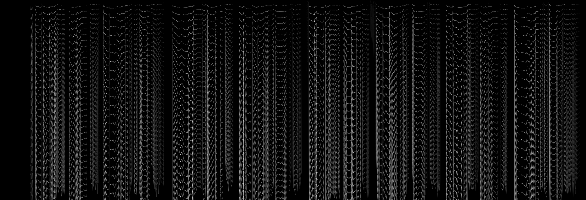
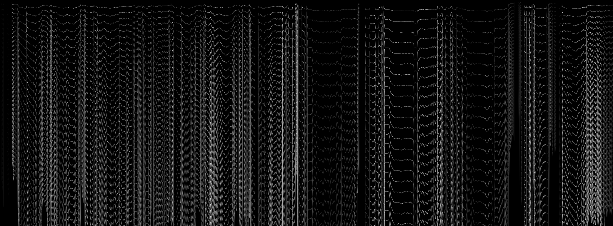
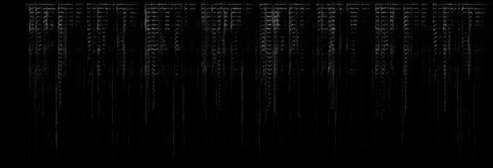
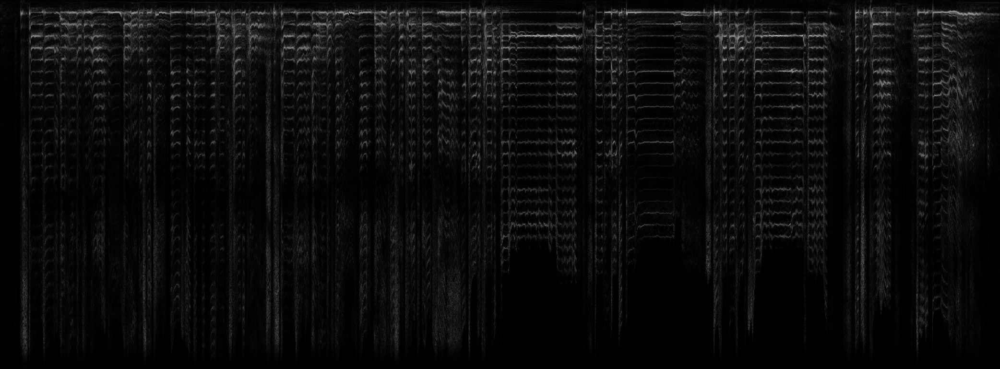
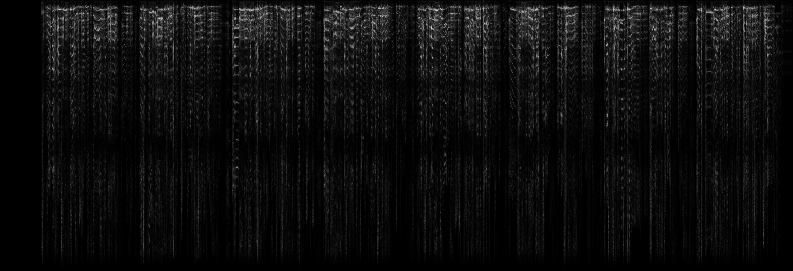

Introduction
The task of singing style transfer (a restricted case of general audio style transfer) requires applying the style from one recording of singing audio to the content of another. The result is primarily judged by:
- Intelligibility: are the non-stylistic features of the content audio (pitch, timing, vowel / consonant sounds) preserved?
- Plausibility: is the output file plausibly produced by the target singer (i.e. are the stylistic features transferred)?
Example
We represent audio files as linear amplitude spectrograms. Time is represented on the horizontal axis and frequency is represented on the vertical axis.
A sample content to a style transfer system is:
(This is Ariana Grande singing part of Rolling in the Deep in a non-studio setting)
Then, a sample style is:
(This is Adele singing a different part of Rolling in the Deep)
Finally, the expected stylized output is:
(This is Adele singing the same part as content snippet).
We use this example (temporally-aligned versions of the same song from two professional singers) since we have gold-standard stylized output.
Pipeline Output
For the example given above, the outputs of our pipeline (including intermediate output) are:
Content Harmonics  Style Harmonics  Content Pitch-Normalized  Style Pitch-Normalized  Stylized (No Post-Processing)  Stylized (Post-Processed)